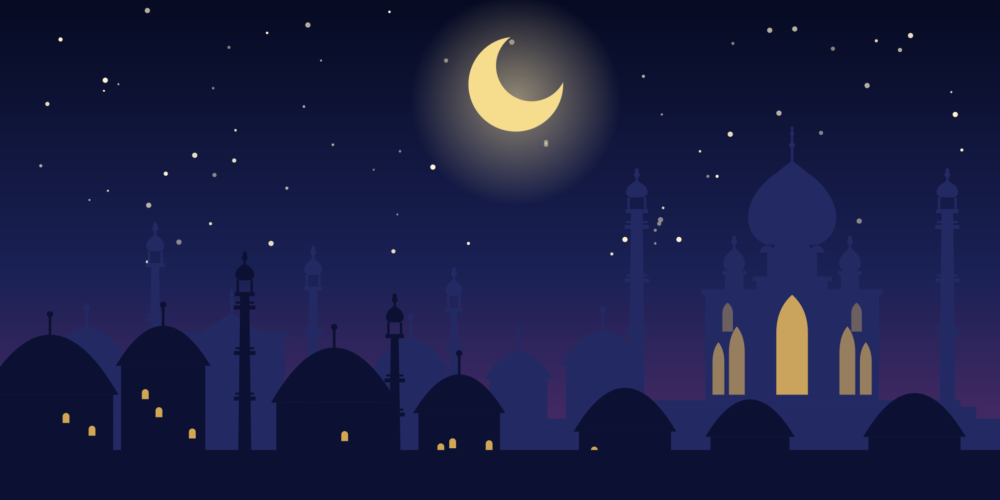
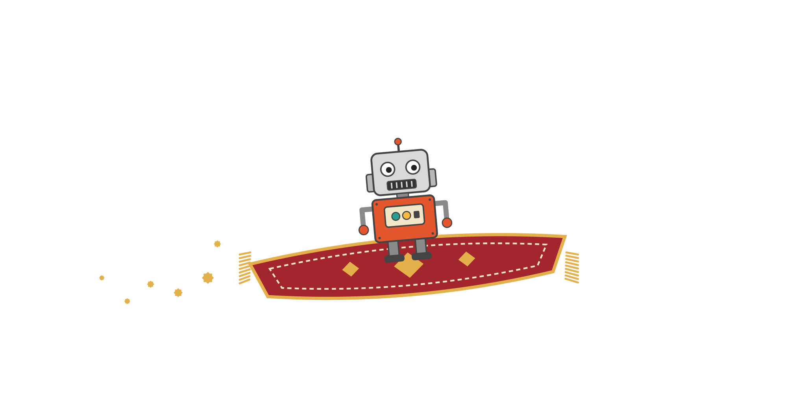

A tale of one night, one tin robot and one very long list.
It is told that in the city of Skerries, by the cold grey sea, there lived a man with a laptop, a head full of ideas and rather fewer hours than he would have liked. And it is told that he answered to a boss called Noreen T, who had given him a list.
Now Scheherazade, as everyone knows, bought herself a thousand and one nights by telling the king a new story each evening. Our man had no such luxury. He had one night. So he did what any wise person in the old tales would do. He rubbed a lamp.
Out came no genie, but a tin robot, with a grille for a mouth and an AI behind his eyes. His name was Wurzel. “Master,” said Wurzel, “what is thy wish?”
“The list,” said the man. “All of it. By morning.”
And the robot got to work, telling the tale of each task as he finished it, so that the Sultana might never lose patience.
The Sultana's list came as questions and chores, written in a fine, firm hand. Wurzel read it twice, answered what could be answered, did what could be done, and wove the remainder into a checklist with little boxes to tick. Tick one, and its answer unrolls beneath it like a scroll.
It was the first time in the history of homework that the homework was kind to the student.
A merchant who sells protection must first teach his customers what they are being protected from. So Wurzel built a library of fourteen plain-spoken briefings: the strange USB stick, the generous café Wi-Fi, the supplier whose bank details changed overnight, the email that cried your password expires today.
One briefing for each week, one page each, no jargon and no frightening anyone for sport.
On Medium, in the master's own voice, there now stands a piece called Nobody Wants to Be the IT Department: five questions to put to whoever looks after your computers, and three things to do this week.
The master read every line before it went out. That, he says, is the part that remains a human's work.
A shop that cannot be found is only a very expensive wall. Wurzel went before the great Search Engine, proved that eriu.tech belonged to the master, and laid before it a map of all twenty-one rooms of the house.
Whether the Search Engine will come knocking is written in a book we cannot read. But the door has been marked.
Here the story takes a turn. The website that the world could see and the copy kept safe in GitHub turned out to be two different cities with the same name. Wurzel noticed, and told the master plainly instead of pretending.
The master chose the living city. Wurzel carried it, stone by stone, into the vault (leaving the private papers behind), and bound it to Netlify so that every future change would travel by itself. One city now, one home.
Scheherazade's secret was never the stories. It was turning up every night. So the briefings are set to appear every Tuesday at half past eight, and the first four wait, lanterns lit, on LinkedIn: the 10th and 17th and 24th of November, and the 1st of December.
The airport report is already out in the world, and the rest follow, week by week.
The master's LinkedIn mirror said a great deal about where he had been and little about what he could do for a school or a builder. Wurzel polished it: a new headline, the right city (Skerries, not Berlin), and a few plain paragraphs about what Eriu is for.
Then he raised a second mirror, a company page for Eriu itself, with a banner of the sea and, for its face, a tin robot with a worried expression and a grille for a mouth.
For a long while the master could not say who the "Trusted Pros" were. At last he said it: the solicitors and quantity surveyors and electricians of Skerries, Balbriggan, Donabate and Swords, who need good IT but would never keep a man on the payroll for it. They want a short visit when something breaks, and the many small visits add up to a living.
Wurzel wrote it all into a letter to Noreen T, to check that they understood her. The letter waits in the master's drafts, sealed but unsent, because some seals a man must break himself.
Here is the secret behind the magic, and it is a plain one. The robot works through a tool called Claude in Chrome, which lets him use the master's own browser. The master signed in to Facebook himself, because a genie should never be handed the keys to the house, and then gave Wurzel a free hand: do whatever thou canst.
And so, page by page, the robot filled in the rooms. A cover for the Facebook page. A category. A banner of the sea for the LinkedIn page, a description, a logo. The master then renamed the old travel page Eriu Technology Ltd and hung the tin robot's portrait over the door, so that every page wears the same face.
This is the small, exhausting work that steals the spoons of a man's patience: the forms, the fields, the sizes of pictures. It is exactly the work to hand to a robot who does not get tired, so long as the man still decides which doors to open.
There were fourteen scrolls of wisdom on the master's blog, one for each scam that catches the unwary: the poisoned USB stick, the free Wi-Fi, the forged invoice, the phish with chips, the ransom note, and the rest. Wurzel carried every one across the river to Medium, a great market of stories, and set them to appear one a day, at nine in the morning, from the fourth of November to the seventeenth.
Each scroll points back to its home on the master's own blog, and every link now hangs on the checklist of Noreen T, the big boss, so she may watch them appear like lanterns lit one by one along the road.
Not every gate opens to a robot, and none should open to him unwatched. The Google business profile asks for a human to prove he is who he says he is, and so that tale is still to be told, by the master, on another night: the profile is made, and only a postcard to his door can finish it. The letter to the Sultana is sealed but unsent, and every scroll goes out under his name only after he has read it.
A tool that can do almost anything is a tool to treat with a little care. The important seals still carry the master's own mark.
A one-person business is limited by the hours in a night, and Wurzel does not abolish that limit. He moves it a very long way. The ideas, the judgement, the client calls and every seal that matters remain the master's.
The tedious middle of setting up a company, though, is where a tin robot earns his oil. Eleven tales in one night, and the morning came with a shorter list.
If you run a small organisation and your IT is a source of low-level dread, that is precisely what Eriu is for. Come and say hello at eriu.tech.
Written with Claude, an AI assistant from Anthropic, and edited by a human. The skyline and the carpet are drawings; the tin robot is real; the to-do list is real and was very long.